경영지도사-1차-1교시(구) (2016-05-07 기출문제)
1과목: 중소기업관련법령
1. 중소기업기본법상 정부가 실시해야 하는 중소기업시책으로 명시된 내용이 아닌 것은?
- 중소기업의 생산성 향상을 위한 생산 시설의 현대화
- 중소기업 제품의 판로(販路) 확대를 위한 유통구조의 현대화
- 중소기업의 국제화 촉진을 위한 중소기업의 수출입 진흥
- 중소기업의 근로환경 개선과 복지수준 향상
- 기술개발과 경영혁신을 통한 경쟁력 확보 및 투명한 경영
(정답률: 알수없음)

2. 중소기업기본법상 중소기업청장이 중소기업 시책에 참여하려는 중소기업자가 동법 제2조에 따른 중소기업자에 해당하는지 확인하기 위하여 국세청장에게 과세정보의 제출을 문서로 요청할 경우, 이에 명시해야 할 사항에 해당하지 않는 것은?
- 매출액
- 상시 근로자 수
- 자기자본(자산총액-부채총액)
- 법인설립등기일 또는 사업자등록을 한 날
- 주주현황 및 다른 법인에 대한 출자현황
(정답률: 알수없음)
3. 중소기업기본법상 중소기업 옴부즈만이 독립하여 수행하는 업무로 명시되지 않은 것은?
- 불합리한 규제 등에 따른 중소기업의 고충처리
- 중소기업에 영향을 미치는 규제의 발굴 및 개선
- 중소기업 사회적책임경영 관련 전문인력의 양성
- 중소기업 관련 규제와 애로사항의 조사ㆍ분석
- 중소기업에 영향을 주는 기존 규제의 정비와 애로사항 해결 등에 관한 보고서 작성 및 보고
(정답률: 알수없음)
4. 중소기업기본법상 중소기업자가 아닌 자로서 중소기업 확인자료를 거짓으로 제출하여 중소기업시책에 참여한 자에게 부과하는 벌칙으로 옳은 것은?
- 500만원 이하의 과태료
- 1천만원 이하의 과태료
- 500만원 이하의 벌금
- 1천만원 이하의 벌금
- 1천만원 이하의 과징금
(정답률: 알수없음)
5. 중소기업창업 지원법상 중소기업창업투자조합의 업무집행조합원에 관한 설명으로 옳지 않은 것은?
- 중소기업창업투자조합의 업무는 업무집행조합원이 집행한다.
- 업무집행조합원은 선량한 관리자의 주의로 조합의 업무를 집행하여야 한다.
- 업무집행조합원은 해당 중소기업창업투자조합의 규약을 사무소에 갖추어 두고 누구든지 열람할 수 있도록 하여야 한다.
- 업무집행조합원은 중소기업창업투자조합의 업무를 집행할 때 자금차입, 지급보증 또는 담보제공을 할 수 있다.
- 업무집행조합원은 중소기업창업투자회사의 등록이 취소된 경우 중소기업창업투자조합에서 탈퇴할 수 있다.
(정답률: 알수없음)
6. 중소기업창업 지원법상 중소기업창업투자회사가 그 사업의 수행을 위하여 필요할 경우 자금을 차입할 수 있는 곳이 아닌 것은?
- 정부가 설치한 기금
- 국내외 금융기관
- 중소기업상담회사
- 외국정부
- 국제기구
(정답률: 알수없음)
7. 중소기업창업 지원법상 중소기업창업투자회사로 등록하려는 자가 등록신청서 제출시 첨부하여야 할 서류에 해당하지 않는 것은?
- 정관
- 사업계획서
- 주주의 명부
- 임원의 이력서
- 회계법인의 감사의견서가 첨부된 결산서
(정답률: 알수없음)
8. 중소기업창업 지원법상 특정 사업을 영위하는 회사로서 중소기업창업 지원법에 따른 지원을 받으려는 자는 등록요건을 갖추어 중소기업청장에게 중소기업상담회사로 등록하여야 한다. 그 사업에 해당하는 것을 모두 고른 것은?
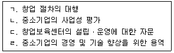
- ㄱ, ㄴ, ㄷ
- ㄱ, ㄴ, ㄹ
- ㄱ, ㄷ, ㄹ
- ㄴ, ㄷ, ㄹ
- ㄱ, ㄴ, ㄷ, ㄹ
(정답률: 알수없음)
9. 중소기업창업 지원법상 중소기업청장은 중소기업창업투자회사가 등록을 취소할 수 있는 사유에 해당하여 중소기업창업투자회사의 건전한 운영을 해칠 우려가 있다고 인정되는 경우 그 임직원에 대하여 문책의 요구를 할 수 있다. 그 문책의 종류에 해당하지 않는 것은?
- 감봉
- 강등
- 경고
- 면직 또는 해임
- 6개월 이내의 직무정지
(정답률: 알수없음)
10. 중소기업창업 지원법상 중소기업창업투자조합의 해산 사유로 옳지 않은 것은?
- 존속기간의 만료
- 유한책임조합원 과반수의 탈퇴
- 중소기업창업투자회사인 업무집행조합원 전원의 탈퇴
- 중소기업창업투자회사인 업무집행조합원 전원의 등록의 말소
- 업무집행조합원인 창업투자회사의 등록이 취소되거나 파산 등으로 인하여 업무수행을 계속하기가 곤란한 경우
(정답률: 알수없음)
11. 중소기업진흥에 관한 법률상 지도사(경영 또는 기술지도사를 말함)가 경영 및 기술 진단에 수반되는 증명업무를 행하지 못하는 대상자에 해당하지 않는 것은?
- 과거 1년 이내에 배우자가 사용인이었던 자
- 배우자가 임원에 준하는 직위에 있는 회사
- 해당 지도사와 1억원 이상의 채권 또는 채무관계에 있는 자
- 해당 지도사가 발행주식총수의 100분의 1 이상의 주식을 소유하고 있는 회사
- 해당 지도사에게 통상의 거래가격보다 현저히 낮은 대가로 지도사 사무실을 제공하고 있는 회사
(정답률: 알수없음)
12. 중소기업진흥에 관한 법률상 정부가 중소기업자의 원활한 협업 수행을 위하여 지원사업을 할 수 있는 사항으로 명시되지 않은 것은?
- 협업자금 지원
- 기술개발자금 출연
- 수출 및 판로개척 지원
- 공동 법인 설립 등에 관한 자문
- 정보 및 기술 교류의 활성화를 위한 전문가의 파견
(정답률: 알수없음)
13. 중소기업진흥에 관한 법률상 중소기업창업 및 진흥기금(이하 “기금”이라 함)에 관한 설명으로 옳지 않은 것은?
- 기금의 재원에는「공공자금관리기금법」에 따른 공공자금관리기금에서의 예수금(豫受金)이 포함된다.
- 중소기업진흥공단은 이사회의 의결을 거쳐 중소기업청장의 승인을 받아 기금의 부담으로 채권을 발행할 수 있다.
- 채권의 발행액은 적립된 기금의 20배를 초과할 수 없다.
- 채권의 소멸시효는 상환일부터 기산하여 원금은 10년, 이자는 5년으로 완성된다.
- 중소기업진흥공단은「국가재정법」제73조에 따른 기금결산보고서를 작성하여 운영위원회의 심의를 거쳐 매 회계연도가 지난 후 2개월 이내에 중소기업청장에게 제출하여야 한다.
(정답률: 알수없음)
14. 중소기업진흥에 관한 법률상 중소기업가업 승계지원센터(이하 “지원센터”라 함)의 지정에 관한 내용으로 옳지 않은 것은?
- 지원센터의 지정기준, 지정절차 및 운영 등에 관하여 필요한 사항은 대통령령으로 정한다.
- 정부는 지원센터의 운영에 사용되는 경비의 전부 또는 일부를 지원할 수 있다.
- 법인이 아니더라도 지원센터의 지정을 받을 수 있다.
- 지원센터로 지정받은 자는 해당 연도의 사업 계획과 전년도의 사업추진 실적을 매년 1월 31일까지 중소기업청장에게 보고하여야 한다.
- 지원센터의 업무에는 외국 사례 등 가업승계 원활화를 위한 선진제도 발굴에 관한 사항도 포함된다.
(정답률: 알수없음)
15. 중소기업진흥에 관한 법률상 경영 또는 기술지도사의 자격시험(이하 “자격시험”이라함) 등에 관한 설명으로 옳지 않은 것은?
- 중소기업청장이 실시하는 자격시험에 합격한 자는 지도사(경영지도사 또는 기술지도사를 말함)의 자격을 가진다.
- 시ㆍ도지사는 자격시험 합격자에게 산업통상자원부령으로 정하는 지도사자격증을 내주어야 한다.
- 자격시험의 응시 자격, 시험 과목, 시험 방법 및 시험실시기관의 업무 범위 등에 관하여 필요한 사항은 대통령령으로 정한다.
- 자격시험에서 부정한 행위를 한 사람에 대해서 합격 결정 취소처분을 한 경우 그 취소처분을 한 날부터 5년간 지도사자격시험 응시 자격을 정지한다.
- 시험실시기관은 자격시험을 치려는 사람이 자격시험 응시원서 접수 마감일의 다음 날부터 시험시행 20일 전까지 접수를 취소한 경우 낸 응시수수료의 100분의 60에 해당하는 금액을 돌려주어야 한다.
(정답률: 알수없음)
16. 중소기업진흥에 관한 법률상 협동화실천계획에 포함되어야 하는 사항을 모두 고른 것은?
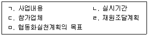
- ㄱ, ㄷ, ㄹ
- ㄱ, ㄹ, ㅁ
- ㄴ, ㄷ, ㅁ
- ㄱ, ㄴ, ㄹ, ㅁ
- ㄱ, ㄴ, ㄷ, ㄹ, ㅁ
(정답률: 알수없음)
17. 중소기업 기술혁신 촉진법상 중소기업의 기술혁신을 촉진하기 위하여 중소기업청장이 추진하여야 하는 지원사업으로 명시되지 않은 것은?
- 기술혁신에 필요한 자금지원
- 기술혁신 성과의 사업화
- 기술혁신형 중소기업 육성
- 기술혁신 과제의 사업타당성 조사
- 중소기업의 우수한 혁신기술의 성과에 대한 전시ㆍ홍보
(정답률: 알수없음)
18. 중소기업 기술혁신 촉진법상 중소기업 기술혁신 추진위원회(이하 “기술혁신 추진위원회”라 함)에 관한 내용으로 옳지 않은 것은?
- 기술혁신 추진위원회는 촉진계획의 수립에 관한 사항을 심의하는 경우 그 결과를 산업통상자원부장관에게 보고하여야 한다.
- 기술혁신 추진위원회는 위원장 1명을 포함한 20명 이상 30명 이하의 위원으로 구성한다.
- 기술혁신 추진위원회의 위원장은 민간위원이 아닌 자 중에서 호선(互選)한다.
- 기술혁신 추진위원회의 위원중 공무원이 아닌 위원의 임기는 2년으로 하되, 연임할 수 있다.
- 기술혁신 추진위원회의 회의는 재적위원 과반수의 출석과 출석위원 과반수의 찬성으로 의결한다.
(정답률: 알수없음)
19. 중소기업 기술혁신 촉진법상 품질인증에 관한 설명으로 옳지 않은 것은?
- 중소기업청장은 품질인증 신청을 받은 경우에는 품질인증을 받으려는 중소기업의 공장에 대한 심사를 하고, 인증기준에 적합하면 유효기간을 정하여 품질인증을 하여야 한다.
- 품질인증의 인증기준에 적합하려면 제품의 품질 불량률이 1백만분의 1천 이하이어야 한다.
- 중소기업청장은 품질인증을 받으려는 중소기업으로부터 품질인증과 관련하여 필요한 비용을 받을 수 있다.
- 품질인증의 유효기간은 품질인증을 받은 날부터 3년으로 한다.
- 중소기업청장은 품질인증을 받은 중소기업이 인증기준에 미치지 못하게 된 경우 품질인증을 취소하여야 한다.
(정답률: 알수없음)
20. 중소기업 기술혁신 촉진법상 중소기업기술정보진흥원(이하 “기술정보진흥원”이라 함)에 관한 설명으로 옳지 않은 것은?
- 기술정보진흥원은 중소기업자ㆍ개인 또는 단체가 출연하여 설립한다.
- 기술정보진흥원은 법인으로 하며, 주된 사무소의 소재지에서 설립등기를 함으로써 성립한다.
- 공공기관ㆍ중소기업자ㆍ개인 또는 단체는 기술정보진흥원이 중소기업 기술혁신 기반조성사업을 하는 경우에 그 사업수행에 필요한 경비를 지원할 수 있다.
- 기술정보진흥원에 관하여 중소기업 기술혁신 촉진법에서 규정한 것을 제외하고는「민법」중 사단법인에 관한 규정을 준용한다.
- 정부는 기술정보진흥원의 설립ㆍ운영에 필요한 경비를 예산의 범위에서 출연할 수 있다.
(정답률: 알수없음)
21. 벤처기업육성에 관한 특별조치법상 주식회사인 벤처기업의 주식매수선택권에 관한 설명으로 옳은 것은?
- 주식매수선택권을 부여할 수 있는 주식의 총 한도는 해당 벤처기업이 발행한 주식총수의 100분의 50으로 한다.
- 주식매수선택권을 부여하려는 벤처기업은 주주총회의 특별결의가 있으면 별도의 신고의무를 부담하지 않는다.
- 벤처기업의 주식매수선택권은 타인에게 양도할 수 없으므로 주식매수선택권을 부여받은 자가 사망하는 때에는 그 상속인이 이를 부여받을 수 없다.
- 주식매수선택권을 부여받은 자는 주주총회 결의가 있는 날부터 이를 행사할 수 있다.
- 주식매수선택권의 부여는 주식매수선택권의 행사가격과 시가와의 차액(행사가격이 시가보다 낮은 경우의 차액을 말함)을 현금이나 자기주식으로 주는 방법으로 할 수 없다.
(정답률: 알수없음)
22. 벤처기업육성에 관한 특별조치법상 용어의 정의로 옳은 것을 모두 고른 것은?
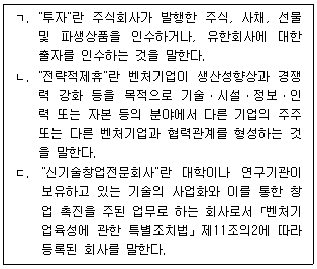
- ㄴ
- ㄱ, ㄴ
- ㄱ, ㄷ
- ㄴ, ㄷ
- ㄱ, ㄴ, ㄷ
(정답률: 알수없음)
23. 벤처기업육성에 관한 특별조치법상 한국벤처투자조합을 결성할 수 있는 자는?
- 중소기업협동조합
- 신기술사업금융업자
- 중소기업창업자문회사
- 상시 근로자 수가 5명인 소기업
- 출자금 총액이 조합 결성금액의 0.5퍼센트인 「상법」상 유한회사
(정답률: 알수없음)
24. 벤처기업육성에 관한 특별조치법상 한국벤처투자조합의 업무집행조합원에게 금지된 행위가 아닌 것은?
- 자금차입ㆍ지급보증 또는 담보를 제공하는 행위
- 대통령령으로 정하는 금융기관의 주식을 취득하거나 소유하는 행위
- 「독점규제 및 공정거래에 관한 법률」에 따른 상호출자제한기업집단에 속하는 회사에 투자하는 행위
- 담보권의 실행으로 비업무용부동산을 취득하는 행위
- 자기나 제삼자의 이익을 위하여 한국벤처투자조합의 재산을 사용하는 행위
(정답률: 알수없음)
25. 벤처기업육성에 관한 특별조치법상 한국벤처투자조합의 해산에 관한 설명으로 옳은 것은?
- 한국벤처투자조합은 결성목적이 달성되었다고 조합원 전원이 동의하는 경우에도 해산할 수 없다.
- 한국벤처투자조합은 유한책임조합원 전원이 탈퇴하면 해산한다.
- 한국벤처투자조합은 업무집행조합원 중 1인이라도 탈퇴할 경우 해산한다.
- 한국벤처투자조합이 해산하면 유한책임조합원 전원이 청산인이 된다.
- 한국벤처투자조합의 해산 당시의 출자금액을 초과하는 채무가 있으면 유한책임조합원 전원이 그 채무를 변제하여야 한다.
(정답률: 알수없음)
26. 벤처기업육성에 관한 특별조치법상 벤처기업에 포함되지 아니하는 업종으로 분류되지 않은 것은?
- 피부미용업
- 비알콜 음료점업
- 노래연습장 운영업
- 음반 및 비디오물 임대업
- 주거용 건물 개발 및 공급업
(정답률: 알수없음)
27. 여성기업지원에 관한 법률의 내용으로 옳은 것은?
- 중소기업청장은 공공기관이 여성기업에 불합리한 차별적 관행이나 제도를 시행할 경우 그 시정을 요청하여야 한다.
- 중소기업청장은 여성기업의 활동을 촉진하기 위한 기본계획을 2년마다 수립하고 이를 추진하여야 한다.
- 중소기업청장은 여성기업의 활동 현황 및 실태를 파악하기 위하여 매년 실태 조사를 하고 그 결과를 공표하여야 한다.
- 국가 또는 지방자치단체는 한국여성경제인협회의 사업을 위하여 필요한 경우에는 국유재산과 공유재산을 무상으로 협회에 대부하여야 한다.
- 국가 및 지방자치단체는 기업에 대한 자금을 지원할 때 여성기업의 활동과 창업을 촉진하기 위하여 여성기업을 우대하여야 한다.
(정답률: 알수없음)
28. 여성기업지원에 관한 법률상 여성기업에 대한 지원에 관한 설명으로 옳지 않은 것은?
- 중소기업청장은「중소기업창업 지원법」에 따른 중소기업 창업지원계획에 여성의 창업촉진을 위한 계획을 포함시켜야 한다.
- 공공기관의 장은「중소기업기본법」에 따른 중소기업자인 여성기업이 직접 생산하고 제공하는 제품의 구매를 촉진하여야 한다.
- 중소기업청장은 여성기업의 기술혁신 지원계획을 원활하게 수립ㆍ시행하기 위하여 여성기업 기술혁신 지원단을 설치ㆍ운영하여야 한다.
- 「산업디자인진흥법」에 따른 한국디자인진흥원은 여성기업의 디자인 개발을 촉진하기 위하여 노력하여야 한다.
- 한국여성경제인협회는 여성의 창업과 여성기업의 활동을 적극적으로 촉진하기 위하여 여성기업종합지원센터를 설치할 수 있다.
(정답률: 알수없음)
29. 소상공인 보호 및 지원에 관한 법률상 소상공인연합회에 관한 설명으로 옳은 것은?
- 소상공인연합회를 설립하려는 법인ㆍ조합 및 단체는 그 회원의 100분의 50 이상이 소상공인일 것을 요건으로 한다.
- 소상공인연합회의 대표자는 반드시 소상공인이어야 하는 것은 아니다.
- 소상공인연합회를 설립하려는 자는 정관과 그 밖에 법령이 요구하는 서류를 시ㆍ도지사에게 제출하여 설립허가를 받아야 한다.
- 소상공인연합회는 법인으로 한다.
- 소상공인 연합회는 지역별 사업의 원활한 추진을 위하여 지회(支會)를 두어야 한다.
(정답률: 알수없음)
30. 소상공인 보호 및 지원에 관한 법률상 소상공인에 대한 지원에 관한 설명으로 옳지 않은 것은?
- 정부는 폐업하려는 소상공인을 지원하기 위하여 취업훈련의 실시 및 취업 알선에 관한 사업을 할 수 있다.
- 소상공인의 사업전환에 따라 사업장을 이전하면서 농지 전용(轉用)이 수반된 경우 농지보전부담금을 면제한다.
- 정부는 소상공인의 구조개선 및 경영합리화 등의 구조고도화를 지원하기 위하여 소상공인 해외 창업의 지원에 관한 사업을 할 수 있다.
- 중소기업청장은 소상공인의 조직화 및 협업화를 위하여 상표 및 디자인의 공동 개발에 관한 지원사업을 할 수 있다.
- 국가나 지방자치단체는 소상공인의 경영안정과 성장을 지원하기 위하여 소상공인에 대하여 필요한 경우에는 관계 법률에서 정하는 바에 따라 소득세, 재산세 및 등록면허세 등을 감면할 수 있다.
(정답률: 알수없음)
31. 중소기업 사업전환 촉진에 관한 특별법상 중소기업청장이 중소기업사업전환촉진계획을 수립ㆍ시행할 때 그 계획에 포함시켜야 할 사항으로 명시되지 않은 것은?
- 중소기업 사업전환정책의 추진방향에 관한 사항
- 사업전환 지원체계의 구축과 운영에 관한 사항
- 사업전환을 지원하기 위한 방안에 관한 사항
- 사업전환을 촉진하기 위한 제도개선에 관한 사항
- 중소기업의 인력구성 및 인력수요의 변화에 관한 사항
(정답률: 알수없음)
32. 중소기업 사업전환 촉진에 관한 특별법상 중소기업청장이 설치ㆍ운영할 수 있는 중소기업사업전환지원센터의 업무로 명시되지 않은 것은?
- 사업전환계획의 수립 지원에 관한 사항
- 사업전환을 위한 정보의 제공과 컨설팅 지원에 관한 사항
- 사업전환에 따른 부담금의 부과ㆍ징수에 관한 사항
- 자금의 융자 주선과 인수ㆍ합병의 연계 지원에 관한 사항
- 유휴설비(遊休設備) 유통정보의 제공과 거래 주선에 관한 사항
(정답률: 알수없음)
33. 중소기업 사업전환 촉진에 관한 특별법상 주식교환을 하려는 승인기업이 작성하는 주식교환계약서에 포함되어야 할 사항이 아닌 것은? (단, 승인기업 중「자본시장과 금융투자업에 관한 법률」에 따른 주권상 장법인은 제외함)
- 사업전환의 내용
- 주식교환을 할 날
- 자기주식의 취득 방법ㆍ가격 및 시기
- 사업전환에 필요한 재원과 그 조달계획
- 교환할 주식의 가액의 총액ㆍ평가ㆍ종류 및 수량
(정답률: 알수없음)
34. 중소기업 사업전환 촉진에 관한 특별법상 사업전환계획 승인의 취소 사유에 해당하지 않는 것은?
- 사업전환계획의 이행실적조사 결과 사업전환계획의 이행이 어렵다고 판단된 경우
- 중소기업청장의 변경 승인 없이 사업전환계획을 변경한 경우
- 승인기업이 휴업으로 6개월 동안 기업활동을 하지 아니하는 경우
- 거짓이나 그 밖의 부정한 방법으로 사업전환계획의 승인을 받은 경우
- 승인기업이 사업전환계획의 승인을 받은 날부터 6개월 이내에 정당한 이유 없이 사업전환계획을 추진하지 아니하는 경우
(정답률: 알수없음)
35. 중소기업 인력지원 특별법상 중소기업 인력지원 기본계획 수립 등을 위하여 중소기업청장이 실시하는 중소기업 인력 및 인식개선 실태조사에 포함되어야 할 사항으로 명시되지 않은 것은?
- 중소기업의「파견근로자보호 등에 관한 법률」위반 실태에 관한 사항
- 중소기업에 대한 정확한 정보제공에 관한 사항
- 중소기업의 지역별ㆍ업종별ㆍ직종별 인력의 실태 및 특성에 관한 사항
- 중소기업의 인식개선을 위한 홍보에 관한 사항
- 중소기업의 대학생 현장체험학습 강화에 관한 사항
(정답률: 알수없음)
36. 중소기업 인력지원 특별법상 중소기업청장이 발굴하여 포상, 홍보하는 등 인식개선사업을 실시하여야 하는 우수 중소기업으로 명시되지 않은 것은?
- 우수한 혁신기술을 보유한 중소기업
- 산(産)ㆍ학(學)ㆍ연(硏) 협동을 성공적으로 수행한 중소기업
- 고용노동부장관이 고시로 정하는 전문 인력을 채용한 중소기업
- 근로환경ㆍ직업능력개발 및 복리후생, 인력의 효율적인 활용 등 인력관리체제를 모범적으로 개선한 중소기업
- 중소기업청장이 중소기업 인식개선에 이바지한다고 인정하는 중소기업
(정답률: 알수없음)
37. 중소기업 인력지원 특별법상 중소기업 근로자에 대한 지원 내용이다. ( )에 들어갈 숫자가 순서대로 옳은 것은?
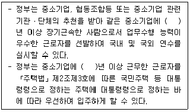
- 5, 1
- 7, 1
- 7, 5
- 10, 3
- 10, 5
(정답률: 알수없음)
38. 중소기업 인력지원 특별법에서 명시하고 있는 특례규정을 모두 고른 것은?
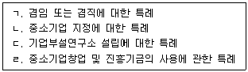
- ㄱ, ㄴ, ㄷ
- ㄱ, ㄴ, ㄹ
- ㄱ, ㄷ, ㄹ
- ㄴ, ㄷ, ㄹ
- ㄱ, ㄴ, ㄷ, ㄹ
(정답률: 알수없음)
39. 장애인기업활동 촉진법상 장애인기업종합지원센터가 수행하는 사업으로 명시되지 않은 것은?
- 장애인기업에 대한 보증추천
- 장애인의 가족에 대한 창업지원
- 장애인기업에 대한 정보 및 자료 제공
- 장애인기업의 경영활동 및 판로지원
- 장애경제인에 대한 교육ㆍ훈련 및 연수
(정답률: 알수없음)
40. 장애인기업활동 촉진법의 내용으로 옳지 않은 것은?
- 장애인이 소유하거나 경영하는「중소기업기본법」에 따른 소기업이 “장애인기업”이 되려면 고용된 상시근로자 총수 중 장애인의 비율이 100분의 50 이상일 것을 요한다.
- 공공기관의 장은 장애인기업이 생산하는 물품의 구매를 촉진하여야 한다.
- 중소기업청장은 매년 초에 장애인기업활동촉진위원회의 심의를 거쳐 장애인기업의 활동을 촉진하기 위한 기본계획을 수립하고 이를 추진하여야 한다.
- 중소기업청장은 창업보육센터사업자를 지정할 때에는 장애인창업자에게 창업에 필요한 시설ㆍ장소 등의 지원을 주된 목적으로 하는 창업보육센터사업자를 우선 지정할 수 있다.
- 중소기업청장은 장애경제인 및 장애인기업의 근로자에 대하여 경영능력과 기술수준을 향상시키기 위한 연수ㆍ지도사업 및 경영컨설팅 지원사업 등을 실시할 수 있다.
(정답률: 알수없음)
2과목: 경영학
41. 유동자산 20억원, 유동부채 10억원, 재고자산 5억원인 경우 당좌비율은?
- 50 %
- 80 %
- 100 %
- 150 %
- 200 %
(정답률: 알수없음)
42. 기업의 사회적 책임이 요구되는 이유로 옳지 않은 것은?
- 외부경제효과
- 시장의 불완전성
- 환경요인간의 상호의존성 심화
- 기업영향력의 증대
- 공유가치 창출의 필요성
(정답률: 알수없음)
43. 동종 또는 유사기업간의 수평적ㆍ수직적 결합이 아닌 이종기업간의 결합을 통해 이점을 추구하는 기업집중은?
- 카르텔(cartel)
- 트러스트(trust)
- 콘체른(konzern)
- 콩글로머리트(conglomerate)
- 조인트벤처(joint venture)
(정답률: 알수없음)
44. 주식회사의 특징에 관한 설명으로 옳은 것은?
- 자본의 증권화로 소유권 이전이 불가능하다.
- 주주는 무한책임을 진다.
- 소유와 경영의 분리가 불가능하다.
- 인적결합 형태로 법적 규제가 약하다.
- 자본조달이 용이하고, 과세대상 이익에 대해서는 법인세를 납부한다.
(정답률: 알수없음)
45. 공급사슬관리(SCM)가 중요해지는 이유에 해당하는 것은?
- 경영환경의 불확실성 증가
- 물류비용의 감소
- 채찍효과로 인한 예측의 불확실성 감소
- 기업의 경쟁강도 약화
- 리드타임의 영향력 감소
(정답률: 알수없음)
46. 기업경영과 관련하여 윤리적 이슈에 해당 하지 않는 것은?
- 횡령
- 불공정 행위
- 환경파괴
- 수익성 제고
- 안전불감
(정답률: 알수없음)
47. 일본의 지식 경영학자인 노나까(I. Nonaka)의 지식변환 과정에서 형식지에서 암묵지로의 전환은?
- 자본화(capitalization)
- 연결화(combination)
- 외부화(externalization)
- 내면화(internalization)
- 사회화(socialization)
(정답률: 알수없음)
48. 다음은 어떤 생산시스템에 관한 설명인가?
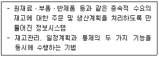
- 공급사슬관리(SCM)
- 자재소요계획(MRP)
- 적시생산시스템(JIT)
- 컴퓨터통합생산(CIM)
- 유연제조시스템(FMS)
(정답률: 알수없음)
49. 인터넷 쇼핑몰, 인터넷 뱅킹, 공연이나 여행관련 예약 등 기업과 소비자 간에 이루어지는 전자상거래의 형태는?
- B2B
- C2C
- B2C
- B2G
- G2C
(정답률: 알수없음)
50. E-비즈니스에 관한 설명으로 옳지 않은 것은?
- E-비즈니스는 전자상거래와 인터넷 비즈니스를 포괄하는 개념이다.
- 인터넷 비즈니스는 네트워크의 규모가 클수록 새로운 참여자에 대한 가치가 커지는 무어의 법칙(Moore's Law)이 존재한다.
- 인터넷 애플리케이션이란 고객에게 가치를 제공하는 인터넷 기반의 소프트웨어를 의미한다.
- E-비즈니스에서 정보를 전략적으로 활용하는 능력은 경쟁우위의 확보와 직결된다.
- E-비즈니스 기업은 빠르게 변화하는 초고속정보화 시대에 적응하기 위해 학습조직화 되어야 한다.
(정답률: 알수없음)
51. 기업이 직면한 문제를 해결하기 위하여 정의-측정-분석-개선-관리(DMAIC)의 과정을 통하여 문제해결을 해나가는 경영혁신기법은?
- IRS
- CRM
- TQM
- DSS
- 6-sigma
(정답률: 알수없음)
52. 동기부여이론 중 과정이론에 해당하는 것은?
- 브룸(V. Vroom)의 기대이론
- 매슬로우(A. Maslow)의 욕구단계이론
- 아지리스(C. Argyris)의 성숙ㆍ미성숙이론
- 허즈버그(F. Herzberg)의 2요인이론
- 맥그리거(D. McGregor)의 XㆍY이론
(정답률: 알수없음)
53. 아웃소싱(outsourcing)에 관한 설명으로 옳지 않은 것은?
- 기업이 생산ㆍ유통ㆍ포장ㆍ용역 등 업무의 일부분을 기업외부에 위탁하는 것이다.
- 기업을 혁신하고 경쟁력을 높일 수 있는 방법 중단기간에 많은 효과를 얻을 수 있는 방법이다.
- 성장과 경쟁력 및 핵심역량 강화를 위한 대안으로 활용되고 있다.
- 독립 가능한 사업부와 조직 단위를 개개의 조직 단위로 나누어 소형화하는 것이다.
- 기업은 고유업무에 집중함으로써 생산성 향상을 도모할 수 있다.
(정답률: 알수없음)
54. 다음은 무엇에 관한 설명인가?
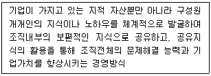
- Knowledge Management
- Enterprise Resource Planning
- Value Engineering
- Business Process Reengineering
- Executive Information Systems
(정답률: 알수없음)
55. 리더십 이론에 관한 설명으로 옳지 않은 것은?
- 리더십 이론은 특성론적 접근, 행위론적 접근, 상황론적 접근으로 구분할 수 있다.
- 블레이크(R. Blake)와 모우튼(J. Mouton)의 관리격자이론에 의하면 (9.9)형이 이상적인 리더십 유형이다.
- 허쉬(R. Hersey)와 블랜차드(K. Blanchard)는 부하들의 성숙도에 따른 효과적인 리더십행동을 분석하였다.
- 피들러(F. Fiedler)는 상황변수로서 리더와 구성원의 관계, 과업구조, 리더의 지휘권한 정도를 고려하였다.
- 하우스(R. House)의 경로-목표이론에 의하면 상황이 리더에게 아주 유리하거나 불리할 때는 과업지향적인 리더십이 효과적이다.
(정답률: 알수없음)
56. 의사소통(communication) 과정이 옳은 것은?
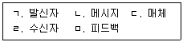
- ㄱ → ㄴ → ㄷ → ㄹ → ㅁ
- ㄱ → ㄷ → ㄴ → ㄹ → ㅁ
- ㄱ → ㄹ → ㄴ → ㄷ → ㅁ
- ㄴ → ㄱ → ㄷ → ㅁ → ㄹ
- ㄴ → ㄷ → ㄱ → ㅁ → ㄹ
(정답률: 알수없음)
57. 명령통일의 원칙이 무시되며 개인이 두 상급자의 지시를 받고 보고를 하는 조직으로 동태적이고 복잡한 환경에 적합한 조직구조는?
- 사업부제 조직
- 팀 조직
- 네트워크 조직
- 매트릭스 조직
- 기능식조직
(정답률: 알수없음)
58. 전통적 조직형태에 해당하는 것은?
- 사내벤처분사 조직
- 역피라미드형 조직
- 라인스텝조직
- 가상조직
- 글로벌 네트워크 조직
(정답률: 알수없음)
59. 카플란(R. Kaplan)과 노턴(D. Norton)이 제시한 균형성과표(balanced scorecard)의 4가지 관점에 해당되지 않는 것은?
- 고객(시장)
- 주주
- 학습과 성장
- 내부프로세스
- 재무
(정답률: 알수없음)
60. 소비자보호에 관한 설명으로 옳지 않은 것은?
- 소비자보호운동은 판매자와 소비자 사이에서 야기되는 소비자의 불만에 대한 시민과 정부의 대응행동이다.
- 소비자보호운동은 판매자와 소비자 간의 거래관계에서 힘의 균형이 소비자에게 기울어지게 됨에 따라 이를 균등화시키기 위한 노력이다.
- 소비자보호 관련 법은 소비자 권리, 제품안전규제의 강화 및 개인정보 보호 등을 포함하고 있다.
- 소비자보호에는 안전, 피해보상, 깨끗한 환경에서 살 권리 등이 있다.
- 소비자보호운동은 기업이 경제와 사회에 해악을 미칠 수도 있다고 보는 시각에서 비롯 되었다.
(정답률: 알수없음)
61. 동기부여이론에 관한 설명으로 옳지 않은 것은?
- 매슬로우(A. Maslow)의 욕구단계이론에 의하면 자아실현이 최상위의 욕구이다.
- 허즈버그(F. Herzberg)의 2요인이론에 의하면 금전적 보상은 위생요인에 속한다.
- 알더퍼(C. Alderfer)의 ERG이론은 존재욕구, 관계욕구, 성장욕구로 구분하여 설명하였다.
- 아담스(J. Adams)의 공정성이론은 내용이론에 속한다.
- 맥클레랜드(D. McClelland)는 성취욕구, 권력욕구, 친교욕구로 구분하여 설명하였다.
(정답률: 알수없음)
62. 해크먼(R. Hackman)과 올드햄(G. Oldham)의 직무특성모형에서 직무가 다른 사람의 작업이나 생활에 실질적인 영향을 미칠 수 있는 정도를 의미하는 것은?
- 기술다양성
- 과업정체성
- 과업중요성
- 자율성
- 피드백
(정답률: 알수없음)
63. 직무분석의 방법에 해당되지 않는 것은?
- 면접법
- 중요사건법
- 요소비교법
- 관찰법
- 질문지법
(정답률: 알수없음)
64. 평가자의 사람에 대한 경직된 고정관념이 평가에 영향을 미치는 인사고과의 오류는?
- 관대화 경향(leniency tendency)
- 중심화 경향(central tendency)
- 주관의 객관화(projection)
- 최근효과(recency tendency)
- 상동적 태도(stereotyping)
(정답률: 알수없음)
65. 마이클 포터(M. Porter)가 산업환경분석을 위해 사용한 5가지 경쟁요인에 해당되지 않는 것은?
- 대체재의 위협
- 신규진입 위협
- 구매자의 교섭력
- 공급자의 교섭력
- 노조와의 교섭력
(정답률: 알수없음)
66. 경영이론에 관한 설명으로 옳지 않은 것은?
- 과학적 관리이론은 생산성과 효율성을 강조하였다.
- 자원기반이론은 기업의 활용 가능한 핵심자원에 초점을 두었다.
- 인간관계이론은 행동과학이론의 주장을 반박하며 인간을 다양한 욕구를 가진 존재로서 파악하였다.
- 시스템이론은 전체 시스템의 관점에서 조직을 연구하는 것이 중요하다고 하였다.
- 상황이론은 조직구조 및 경영기법이 환경에 따라 변해야 한다고 하였다.
(정답률: 알수없음)
67. 막스 베버(M. Weber)가 제시한 관료제의 특성에 해당되지 않는 것은?
- 상위직급과 하위직급 간의 수평적 의사소통
- 문서로 정해진 규칙과 절차에 따른 과업의 수행
- 기능적 전문화에 기초한 체계적인 업무의 분화
- 직무는 전문화되고, 훈련받은 자에 의한 직무의 수행
- 안정적이고 명확한 권한계층
(정답률: 알수없음)
68. 경영마인드(business mind)에 관한 설명으로 옳지 않은 것은?
- 경영마인드에는 고객중심, 가치극대화, 경쟁우위 마인드를 포함한다.
- 고객중심 마인드는 고객에게 제공되는 일체의 물리적ㆍ심리적 행동이 최상의 고객만족을 가져다주는 것을 추구한다.
- 가치극대화 마인드는 효율적인 방법으로 자원을 투입하여 최대의 산출이 발생하도록 추구한다.
- 경쟁우위 마인드는 경쟁우위를 확보하기 위해 기술력이나 경영능력을 갖추는 것을 중시한다.
- 경영마인드는 형평성과 일관성을 추구한다.
(정답률: 알수없음)
69. 공장 내 설비 배치에 관한 설명으로 옳지 않은 것은?
- 공정별 배치는 비슷한 작업을 수행하는 기계, 활동들을 그룹별로 모아 놓은 것으로 개별주문생산시스템에 적합하다.
- 제품별 배치는 공정의 순서에 따라 배치하는 것으로 연속적인 대량생산에 적합하고, 재공품과 물류비 감소 및 생산 통제가 용이하다.
- 위치고정형 배치는 대단위 제품들을 한 곳에 모아 놓고 조립하는 형태로 프로젝트 기법을 활용하여 생산계획과 통제를 한다.
- 혼합형 배치는 공정과 제품요소를 동시에 혼합하는 것으로 소품종 대량생산의 경우에 적합하다.
- 프로세스별 배치는 특정제품을 생산하는 일련의 고정된 순서에 의해 배치하는 것으로 주로 특수화된 공구와 장치 생산에 적합하다.
(정답률: 알수없음)
70. 다음은 어떤 생산공정에 관한 설명인가?
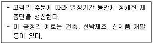
- 프로젝트공정
- 대량생산공정
- 유연생산공정
- 자동생산공정
- 연속생산공정
(정답률: 알수없음)
71. 테일러(F. Taylor)의 과학적 관리법의 내용으로 옳지 않은 것은?
- 차별적 성과급제 적용
- 시간 및 동작연구를 통해 과업 결정
- 조명 및 계전기조립실험 실시
- 수행활동의 기능별 분업
- 근로자를 과학적으로 선발하여 교육
(정답률: 알수없음)
72. 기업의 세후 타인자본비용 5 %, 자기자본비용 10 %, 타인자본의 시장가치 20억원, 자기자본의 시장가치 80억원인 경우 가중평균자본비용은?
- 5 %
- 7 %
- 9 %
- 11 %
- 13 %
(정답률: 알수없음)
73. BCG매트릭스에 관한 설명으로 옳지 않은 것은?
- 별(star)에 해당하는 사업은 성장전략을 추구하는 것이 바람직하다.
- 개(dog)에 해당하는 사업은 철수전략이나 회수전략이 바람직하다.
- 현금젖소(cash cow)에 해당하는 사업은 현재의 시장지위를 유지하고 강화하는 전략이 바람직하다.
- 물음표(question mark)에 해당하는 사업이 경쟁우위를 가질 수 있다고 판단되면 성장전략과 과감한 투자가 바람직하다.
- 사업 포트폴리오의 성공적인 순환경로는 현금 젖소 → 별 → 물음표 → 개다.
(정답률: 알수없음)
74. 기업의 경영의사결정에 관한 설명으로 옳지 않은 것은?
- 경영의사결정은 미래의 상황을 예견하고 행동방안을 선택 또는 결정하는 행위이다.
- 전략적 의사결정은 기업의 내부자원을 조직화하기 위한 의사결정이다.
- 업무적 의사결정의 특징은 의사결정 내용이 단순하고 반복적, 분권적이다.
- 비정형적 의사결정은 경영자의 창의력이나 직관에 의존한다.
- 정형적 의사결정은 반복하여 발생하는 문제들에 대하여 적용하는 것으로 표준화된 절차에 따른다.
(정답률: 알수없음)
75. 인간은 인지능력의 한계로 제한된 합리성을 가지게 된다고 주장한 학자는?
- 마이클 포터(M. Porter)
- 허버트 사이먼(H. Simon)
- 헨리 페이욜(H. Fayol)
- 존 내쉬(J. Nash)
- 엘톤 메이요(E. Mayo)
(정답률: 알수없음)
76. 앤소프(H. Ansoff)가 주창한 성장전략 중 신제품을 통해 신시장에 진출하는 전략은?
- 저원가 전략
- 다각화 전략
- 시장개발전략
- 제품개발전략
- 시장침투전략
(정답률: 알수없음)
77. STP전략에 관한 설명으로 옳지 않은 것은?
- 인구통계적 세분화는 나이, 성별, 가족규모, 소득, 직업, 교육수준 등을 바탕으로 시장을 나누는 것이다.
- 행동적 세분화는 추구하는 편익, 사용량 등을 바탕으로 시장을 나누는 것이다.
- 사회심리적 세분화는 제품사용경험, 제품에 대한 태도, 충성도, 종교 등을 바탕으로 시장을 나누는 것이다.
- 시장표적화는 세분화된 시장의 좋은 점을 분석한 후 진입할 세분시장을 선택하는 것이다.
- 시장포지셔닝은 시장 내에서 우월한 위치를 차지하도록 고객을 위한 제품ㆍ서비스 및 마케팅 믹스를 개발하는 것이다.
(정답률: 알수없음)
78. 집단의사결정의 특징이 아닌 것은?
- 개인의사결정에 비해 보다 정확한 경향이 있다.
- 개인의사결정에 비해 책임소재가 더 명확하다.
- 개인의사결정에 비해 더 많은 대안을 생성할 수 있다.
- 의사결정 시 다양한 경험과 관점을 반영할 수 있다.
- 소수의 아이디어를 무시하는 경향이 일어날 수 있다.
(정답률: 알수없음)
79. 투자안의 경제성 평가방법에 관한 설명으로 옳은 것은?
- 회수기간법은 회수기간 이후의 현금흐름을 고려한다.
- 회계적이익률법은 화폐의 시간적 가치를 고려한다.
- 수익성지수법에 의하면 수익성지수는 투자비/현금유입액의 현재가치이다.
- 순현재가치법에 의하면 순현재가치는 현금유입액의 현재가치에다 투자비를 더한 것이다.
- 내부수익률법에 의하면 개별 투자안의 경우 내부수익률이 자본비용보다 커야 경제성이 있다.
(정답률: 알수없음)
80. 관계마케팅의 등장이유로 옳지 않은 것은?
- SNS 등 정보통신기술의 발전과 다양화
- 고객욕구의 다양화
- 시장규제 강화에 따른 경쟁자의 감소
- 표적고객들에게 차별화된 메시지 전달 필요
- 판매자에서 소비자 중심시장으로 전환
(정답률: 알수없음)
3과목: 회계학개론
81. 재무제표를 표시하는 일반사항에 관한 설명으로 옳지 않은 것은?
- 기업을 청산하거나 경영활동을 중단할 의도를 가지고 있지 않거나, 청산 또는 경영활동의 중단 외에 다른 현실적 대안이 없는 경우가 아니면 계속기업을 전제로 재무제표를 작성한다.
- 현금흐름 정보를 제외하고는 발생기준 회계를 사용하여 재무제표를 작성한다.
- 유사한 항목은 중요성 분류에 따라 재무제표에 구분하여 표시한다. 다만 중요하지 않은 항목은 성격이나 기능이 유사한 항목과 통합하여 표시할 수 있다.
- 한국채택국제회계기준을 준수하여 재무제표를 작성하는 기업은 그러한 준수 사실을 주석에 명시적이고 제한없이 기재한다.
- 부적절한 회계정책은 이에 대하여 공시나 주석 또는 보충자료를 통해 설명함으로써 정당화될 수 있다.
(정답률: 알수없음)
82. 재무정보의 질적 특성 중 다음에서 설명하는 것은?
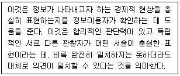
- 목적적합성
- 충실한 표현
- 비교가능성
- 검증가능성
- 이해가능성
(정답률: 알수없음)
83. 재무제표 요소의 측정기준 중 공정가치에 관한 설명으로 옳지 않은 것은?
- 공정가치란 측정일에 시장참여자 사이의 정상 거래에서 자산을 매도하면서 받거나 부채를 이전하면서 지급하게 될 가격을 의미한다.
- 활성시장의 공시가격을 이용할 수 없는 금융상품은 공정가치 평가를 할 수 없다.
- 공정가치는 취득원가에 비하여 신뢰성은 낮으나 목적적합성이 높다.
- 재고자산의 저가법은 부분적으로 공정가치평가의 개념이 적용되고 있다.
- 금융자산은 성격에 따라 공정가치 변동에 따른 평가손익을 당기손익에 반영하기도 하고 기타포괄손익에 반영하기도 한다.
(정답률: 알수없음)
84. 재무정보의 질적 특성에 관한 설명으로 옳은 것은?
- 일반적으로 자산의 역사적원가가 현행원가에 비하여 목적적합성이 더 높다.
- 정보이용자가 항목 간의 유사점과 차이점을 식별하고 이해할 수 있게 하는 질적 특성을 이해가능성이라고 한다.
- 보강적 질적 특성은 근본적 질적 특성간 상충관계가 발생할 때 어느 방법을 선택해야 할지를 결정하는데 도움을 줄 수 있다.
- 일반적으로 연차재무제표는 중간재무제표에 비하여 적시성이 더 높은 정보이다.
- 회계정보가 기업실체의 재무상태, 성과, 순현금흐름 또는 자본변동에 대한 정보이용자의 당초 기대치 또는 예측치를 확인하거나 수정함으로써 정보이용자의 의사결정에 영향을 미칠 수 있는 능력을 예측가치라고 한다.
(정답률: 알수없음)
85. (주)한국의 20×6년도 재무상태표의 기초자산이 ￦500,000이고 기말자산이 ￦900,000이며 기말부채는 ￦300,000이다. 한편 (주)한국의 20×6년도 손익계산서상의 총수익은 ￦250,000이며 총비용이 ￦180,000이다. 20×6년 중 ￦100,000의 유상증자가 있었을 경우 20×6년도의 기초부채금액은?
- ￦50,000
- ￦60,000
- ￦70,000
- ￦80,000
- ￦90,000
(정답률: 알수없음)
86. 재무상태표에 유동자산과 비유동자산, 유동부채와 비유동부채로 구분하여 표시하는 경우에 관한 설명으로 옳지 않은 것은?
- 기업의 정상영업주기 내에 실현될 것으로 예상하거나, 정상영업주기 내에 판매하거나 소비할 의도가 있는 경우에 유동자산으로 분류한다.
- 주로 단기매매 목적으로 보유하고 있는 경우에 유동자산으로 분류한다.
- 현금이나 현금성자산으로서, 교환이나 부채상환 목적으로의 사용에 대한 제한기간이 보고기간 후 12개월 이상인 경우에 비유동자산으로 분류한다.
- 매입채무 그리고 종업원 및 그 밖의 영업원가에 대한 미지급비용은 보고기간 후 12개월 후에 결제일이 도래한다면 비유동부채로 분류한다.
- 기업이 기존의 대출계약조건에 따라 보고기간 후 적어도 12개월 이상 부채를 차환하거나 연장할 것으로 기대하고 있고, 그런 재량권이 있다면, 보고기간 후 12개월 이내에 만기가 도래한다 하더라도 비유동부채로 분류한다.
(정답률: 알수없음)
87. (주)한국의 20×6년도 보통주 당기순이익은 ￦100,000이고 가중평균 유통보통주식수는 500주이다. 만약 (주)한국의 주가수익비율(Price Earning Ratio)이 10이라고 한다면, (주)한국의 20×6년도 기말현재 주가는?
- ￦1,000
- ￦2,000
- ￦3,000
- ￦4,000
- ￦5,000
(정답률: 알수없음)
88. (주)한국은 20×6년 5월 1일 임차건물에 대한 1년치 임차료 ￦3,456,000을 일시에 지급하면서 차변항목을 “임차료”로 분개하였다. 20×6년 12월 31일 결산시점에 필요한 수정분개는?
- (차) 선급임차료 ￦1,152,000
(대) 임차료 ￦1,152,000 - (차) 선급임차료 ￦1,440,000
(대) 임차료 ￦1,440,000 - (차) 선급임차료 ￦2,304,000
(대) 임차료 ￦2,304,000 - (차) 임차료 ￦1,152,000
(대) 선급임차료 ￦1,152,000 - (차) 임차료 ￦1,440,000
(대) 선급임차료 ￦1,440,000
(정답률: 알수없음)
89. (주)한국의 20×6년도 발생기준 당기순이익은 ￦440,000이다. 현금흐름표 작성에 필요한 자료가 다음과 같을 때, 20×6년도 (주)한국의 영업활동으로 인한 현금흐름은? (단, 간접법을 적용한다)
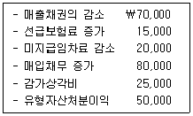
- ￦510,000
- ￦520,000
- ￦530,000
- ￦540,000
- ￦550,000
(정답률: 알수없음)
90. (주)한국에서 수행한 다음의 기중거래와 이에 대한 기말 수정분개를 반영한 후, (주)한국의 20×6년도 포괄손익계산서와 재무상태표에 표시되는 내용으로 옳지 않은 것은?
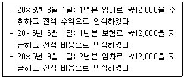
- 재무상태표에 표시되는 선수임대료는 ￦2,000이다.
- 포괄손익계산서에 표시되는 임대료는 ￦10,000이다.
- 재무상태표에 표시되는 선급임차료는 ￦10,000이다.
- 포괄손익계산서에 표시되는 임차료는 ￦2,000이다.
- 재무상태표에 표시되는 선급보험료는 ￦6,000이다.
(정답률: 알수없음)
91. (주)한국은 20×3년 초에 유형자산(취득원가 ￦300,000, 잔존가치 ￦50,000, 내용연수 5년)을 취득하고 정액법으로 감가상각하여 왔다. 만약 (주)한국이 20×6년 초에 해당 유형자산의 내용연수 8년, 잔존가치 ￦0으로 변경하였다면 20×6년 말에 기록될 감가상각비는?
- ￦15,000
- ￦20,000
- ￦25,000
- ￦30,000
- ￦35,000
(정답률: 알수없음)
92. (주)한국의 당좌예금 장부상 잔액은 ￦20,000이고 거래은행에서 보내온 거래명세서 상의 잔액은 ￦24,000으로 일치하지 않는다. 차이의 원인을 규명하던 중 다음과 같은 사실들이 확인되었다. 당좌예금의 잔액으로 옳은 것은?
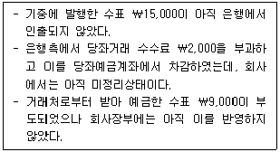
- ￦9,000
- ￦10,000
- ￦19,000
- ￦20,000
- ￦24,000
(정답률: 알수없음)
93. (주)한국은 취득원가에 20 %의 이윤을 가산하여 상품을 전액 외상판매하고 있다. (주)한국의 기초상품재고액 ￦300,000, 당기 상품 매입액 ￦2,700,000, 기말상품재고액 ￦500,000으로 파악되었다. 기초외상매출금 잔액이 ￦1,200,000이고, 당기 현금회수액이 ￦3,500,000이라면 기말의 외상매출금 잔액은?
- ￦300,000
- ￦400,000
- ￦500,000
- ￦600,000
- ￦700,000
(정답률: 알수없음)
94. 재고자산의 회계처리에 관한 설명으로 옳은 것은?
- 재고자산의 평가에 저가법을 적용함으로써 발생한 재고자산평가손실은 영업외비용으로 인식하고, 재고자산의 장부금액에서 직접 차감하여 표시한다.
- 재고자산을 후불조건으로 취득하는 경우, 계약이 실질적으로 금융요소를 포함하고 있다면 해당 금융요소는 금융이 이루어지는 기간동안 이자비용으로 인식한다.
- 시송품은 상품에 대한 점유가 이미 이전되었으므로, 매입자의 매입의사표시 여부와 상관없이 판매된 것으로 보아야 하기 때문에 판매자의 재고자산에 포함시키지 않는다.
- 선적지인도조건의 미착상품에 대한 운송비, 보험료 등을 매입자가 부담한 경우, 이를 매입자의 손익계산서에 판매비와 관리비로 보고한다.
- 도착지인도조건인 경우에는 상품이 선적된 시점에 소유권이 매입자에게 이전되기 때문에 미착상품은 매입자의 재고자산에 포함시킨다.
(정답률: 알수없음)
95. 다음은 (주)한국의 20×6년 6월 중 상품거래를 요약한 자료이다. 
(주)한국은 6월 15일과 6월 25일에 각각 25개의 상품을 판매하였다. 계속기록법으로 기록할 때 선입선출법에 의한 6월 25일 판매의 매출원가는?
- ￦3,075
- ￦3,175
- ￦3,185
- ￦3,2⑤
- ￦3,275
(정답률: 알수없음)
96. 유형자산 감가상각에 관한 설명으로 옳지 않은 것은?
- 감가상각은 자산이 사용가능한 때부터 시작한다.
- 감가상각방법은 자산의 미래경제적효익이 소비될 것으로 예상되는 형태를 반영하여 정액법, 체감잔액법 및 생산량비례법을 적용한다.
- 감가상각이 필요한 이유는 자산이 창출한 수익에 비용을 대응시키기 위해서이다.
- 감가상각을 통하여 상각자산의 기말 공정가치 감소분을 계산할 수 있다.
- 유형자산의 내용연수는 자산으로부터 기대되는 효용에 따라 결정된다.
(정답률: 알수없음)
97. (주)한국은 20×5년 1월 1일 기계장치를 ￦3,456,000에 취득하여 정률법(상각률 0.25)으로 감가상각하고 있다. 이 기계를 20×6년 7월 1일에 ￦2,345,000에 처분하였다면, 유형자산처분손익은?
- 처분이익 ￦31,000
- 처분손실 ￦31,000
- 처분이익 ￦77,000
- 처분손실 ￦77,000
- 처분이익 ￦131,000
(정답률: 알수없음)
98. (주)한국은 20×6년도에 자동차, 기존건물이 있는 토지, 기계장치를 취득하였다. 자동차의 구입가격은 ￦20,000,000인데, 여기서 ￦800,000을 할인받았다. 건물신축을 위해 구입한 토지의 매입가격은 ￦40,000,000인데, 기존건물 철거비용 ￦1,000,000과 철거과정에서 부산물 판매수익 ￦200,000이 발생하였다. 한편, 장기후불조건으로 취득한 기계장치의 취득시점 현금구입가격은 ￦5,500,000이며, 대금지급기간 동안 실제로 기계장치 취득과 관련하여 지급한 총금액은 ￦6,500,000이다. (주)한국이 20×6년도에 구입한 3가지 유형자산의 총취득원가는?
- ￦65,500,000
- ￦66,000,000
- ￦70,500,000
- ￦71,000,000
- ￦72,000,000
(정답률: 알수없음)
99. 부채에 관한 설명으로 옳은 것은?
- 미래의 사건이나 거래의 발생여부에 따라 부채의 존재여부, 금액 및 지급시기 등이 확정되어야만 부채로 인식할 수 있다.
- 부채는 기업으로 하여금 현재의 의무를 가지게 하는 과거사건, 즉 의무발생사건의 결과로 발생한 것이므로 이러한 의무의 이행은 반드시 법적으로 강제할 수 있는 법적의무여야 한다.
- 보고기간 후 12개월 이상 부채의 결제를 연기할 수 있는 무조건의 권리를 가지고 있다면 유동부채로 분류한다.
- 금융부채의 경우, 주로 단기간 내에 매각하거나 재매입할 목적으로 취득하거나 부담하였다면 단기 매매항목으로 분류한다.
- 일반적으로 금융부채란 거래상대방에게 확정된 현금 등의 금융자산을 인도하기로 한 계약상의 의무를 말하며, 외상매입금, 지급어음, 선수금, 선수수익 등을 포함한다.
(정답률: 알수없음)
100. 유효이자율법을 사용하는 (주)한국은 20×6년 1월 1일에 액면금액 ￦10,000의 사채(표시이자율 9 %, 매년 12월 31일 이자지급, 만기 3년)를 ￦9,750에 발행하였다. 발행일의 유효이자율은 10%이며 (주)한국의 보고기간 말은 12월 31일이다. 해당 사채에 관한 설명으로 옳은 것은?
- 사채의 발행일로부터 만기일까지 부담하는 총 이자비용은 ￦2,700이다.
- 20×6년도 포괄손익계산서에 보고되는 이자비용은 ￦900이다.
- 20×6년도 재무상태표에 보고되는 사채의 장부금액은 ￦9,810이다.
- 사채의 발행으로 인한 현금유입액은 ￦9,750 이며, 현금유출액은 ￦10,000이다.
- 포괄손익계산서에 보고되는 이자비용은 매년 증가한다.
(정답률: 알수없음)
101. 사채에 관한 설명으로 옳은 것은?
- 사채의 표면에 기록된 금액은 액면금액이라고 하며, 이 금액은 사채만기일에 상환하는 금액을 의미한다.
- 채권자에게 지급하는 현금이자는 유효이자율에 따라 결정된다.
- 액면이자율이 시장이자율보다 낮은 경우 사채를 할증발행하게 된다.
- 사채를 할증발행한 경우 사채의 장부가액은 시간이 흐를수록 증가한다.
- 사채로 조달한 현금액이 사채의 발행가액이며, 관련 사채발행비는 비용으로 인식한다.
(정답률: 알수없음)
102. 충당부채에 관한 설명으로 옳은 것은?
- 자원유출가능성이 높고 신뢰성 있게 금액을 추정할 수 있는 충당부채는 주석으로 공시한다.
- 충당부채는 지급시기나 금액이 불확실하기 때문에 부채의 인식기준을 충족하지 못한다.
- 충당부채로 인식되기 위해서는 과거사건으로 인한 의무가 기업의 미래행위와 독립적이어야 한다.
- 충당부채의 변동은 변동이 확실한 경우에 한하여 잔액을 검토하고 최선의 추정치를 반영하여 조정한다.
- 충당부채에 대한 최선의 추정치를 구할 때에는 관련된 사건과 상황뿐만 아니라 관련되지 않은 사건일지라도 모두 고려하는 것이 바람직하다.
(정답률: 알수없음)
103. (주)한국은 ￦123,000에 매입하여 보유 중이던 자기주식을 ￦135,000에 재발행하였다. 이 거래가 미치는 영향을 설명한 것으로 옳지 않은 것은? (단, 자기주식의 회계처리는 우리나라 상법을 준수한다)
- 재발행하여 유입된 현금만큼 자산이 증가한다.
- 자기주식이 감소하므로 자본이 감소한다.
- 기타 자본잉여금이 증가한다.
- 유통주식수가 증가한다.
- 재무활동현금흐름이 증가한다.
(정답률: 알수없음)
104. 자본조정 계정에 속하지 않는 구성요소는?
- 주식할인발행차금
- 자기주식
- 주식선택권
- 감자차익
- 자기주식처분손실
(정답률: 알수없음)
1⑤. 주식배당과 무상증자에 관한 설명으로 옳지 않은 것은?
- 주식배당의 재원은 미처분이익잉여금이다.
- 주식배당은 실질적 증자에 해당하나, 무상증자는 형식적 증자에 해당한다.
- 주식배당과 무상증자 후 모두 발행주식수가 증가한다.
- 주식배당과 무상증자 후 모두 자본금이 증가한다.
- 주식배당과 무상증자 후 모두 순자산은 불변이다.
(정답률: 알수없음)
106. (주)한국은 회사를 설립하면서 보통주 10주(액면금액: 주당￦500)를 ￦6,000에 발행하였다. 주식 발행과 관련하여 주당 ￦10의 주식발행비용이 추가로 발생하였을 경우, 회계처리에 관한 설명으로 옳은 것은?
- 주식발행으로 자본총액은 ￦6,000이 증가한다.
- 주식발행비용 ￦100은 당기비용으로 인식한다.
- 주식발행으로 인한 자본잉여금의 순증가는 ￦900이다.
- 주식발행으로 인한 자본금의 순증가는 ￦5,900이다.
- 주식발행으로 인하여 주식할인발행차금이 발생한다.
(정답률: 알수없음)
107. 수익에 관한 설명으로 옳지 않은 것은?
- 수익은 거래와 관련한 미래경제적효익의 유입가능성이 높고 해당금액을 신뢰성 있게 측정할 수 있을 때 인식한다.
- 재화를 판매하는 기업의 경우 인도시에 재화의 법률적 소유권과 함께 그 재화와 관련된 위험과 효익도 이전되는 경우라면 상품이 고객에 인도될 때 수익을 인식한다.
- 로열티 수익은 관련된 계약의 실질을 반영하여 발생기준에 따라 예측한다.
- 이미 수익을 인식한 후에 회수가능성이 불확실해지는 상황이 발생하면 이미 인식한 수익금액을 수정한다.
- 진행기준은 수익창출활동이 여러 기간에 걸쳐 이루어지는 경우에 회계기간의 경영성과를 더 충실하게 나타내는 방법이다.
(정답률: 알수없음)
108. 20×6년 1월 1일에 (주)한국은 ㈜민국의 유통보통주식 5,000주 중 40 %에 해당하는 주식을 주당 ￦1,000에 취득함으로써 (주)민국에 유의적인 영향력을 행사하게 되었다. 20×6년 6월 30일 (주)민국은 ￦200,000의 현금배당을 선언하고 지급하였다. 그리고 (주)민국은 20×6년도의 당기순이익으로 ￦1,000,000을 보고하였다. (주)한국이 투자주식을 지분법으로 회계처리하는 경우, 관계기업투자지분의 보고기간 말 잔액은? (단, 두 기업 모두 결산일은 12월 31일이다)
- ￦1,680,000
- ￦2,000,000
- ￦2,320,000
- ￦2,480,000
- ￦2,800,000
(정답률: 알수없음)
109. (주)한국의 20×6년도 당기순이익은 ￦1,234,000이고 20×6년 말 현재 유통보통주식수는 1,200주이다. 이 중 300주는 20×6년 5월 1일에 추가로 유상증자한 것이다. 20×6년도 기본주당이익은? (단, 소수점 첫째 자리에서 반올림한다)
- ￦1,008
- ￦1,018
- ￦1,022
- ￦1,028
- ￦1,122
(정답률: 알수없음)
110. 회계감사에 관한 설명으로 옳은 것은?
- 회계감사는 독립된 전문가인 공인회계사가 기업이 작성한 재무제표에 대하여 객관적인 검증기능을 수행하여 회계정보의 신뢰성을 검증하고, 이를 바탕으로 감사의견을 표명하기 위해서 이루어진다.
- 회계감사의 주된 목적은 공인회계사가 감사대상기업의 부정이나 오류를 적발하고, 경영자에게 내부통제제도의 개선책을 제시하기 위함이다.
- 회계감사기준은 기업이 연차재무제표를 작성하는 과정에서 지켜야 할 절차에 관한 사항을 규정한 기준이다.
- 회계감사는 주주 등의 외부이해관계자들에 대한 경영자의 재무보고책임을 대신하기 위해서 이루어진다.
- 우리나라는「주식회사의 외부감사에 관한 법률」에 따라 주식회사 형태의 모든 기업은 공인회계사에 의한 외부감사를 받도록 하고 있다.
(정답률: 알수없음)
111. (주)한국은 20×6년 1월 1일 취득원가 ￦1,000,000, 내용연수 5년, 잔존가치 ￦0인 기계장치를 취득한 후 정액법으로 감가상각을 해 오던 중 20×7년 12월 31일 손상검사를 통해 회수가능액이 ￦360,000으로 추정되어 손상차손을 인식하였다. 원가 모형을 채택하고 있는 (주)한국의 20×8년 12월 31일 감액된 유형자산의 회수가능액이 ￦420,000으로 회복된 경우 손상차손환입액은?
- ￦120,000
- ￦140,000
- ￦160,000
- ￦180,000
- ￦200,000
(정답률: 알수없음)
112. 정상개별원가계산에서 연초에 정한 예정배부율을 사용하여 배부된 연간 총제조간접원가 배부액이 연말까지의 실제 총제조간접원가와 일치하지 않을 경우 발생하는 제조간접원가 배부차이에 관한 설명으로 옳지 않은 것은?
- 배부차이를 정확히 조정하려면 배부차이액을 재료재고, 재공품재고, 제품재고의 세 계정에서 모두 조정하여야 하는데, 이를 배부차이의 안분이라 한다.
- 과소배부액은 실제원가가 배부액보다 크면 발생한다.
- 배부차이액이 크지 않다면 간단하게 매출원가에서만 전액 조정하는 방법이 있다.
- 예정배부율은 예상 총제조간접원가를 예상총배부기준량으로 나누어 계산한다.
- 제조간접원가의 예정원가는 실제 배부기준량에 예정배부율을 곱하여 계산한다.
(정답률: 알수없음)
113. 원가 발생을 원가 대상에 추적하여 인식할 수 있는지 여부에 따른 원가 분류는?
- 차액원가, 관련원가
- 판매비와 관리비, 매출원가
- 변동원가, 고정원가
- 직접원가, 간접원가
- 재료원가, 노무원가, 경비
(정답률: 알수없음)
114. 전자시계를 생산하는 (주)한국의 20×6년 1월에서 5월까지의 생산 및 원가자료는 다음과 같다. 
(주)한국의 6월 생산량이 750개일 때, 고저점법에 의해 추정된 6월의 총노무원가액은?
- ￦850,000
- ￦881,250
- ￦896,250
- ￦931,250
- ￦946,250
(정답률: 알수없음)
115. (주)한국은 종합원가계산을 사용하여 제품원가계산을 하고 있다. 기초재공품 수량은 100개(직접재료원가 완성도 100 %, 가공원가 완성도 40 %), 직접재료원가는 ￦23,000이며, 가공원가는 ￦25,000이다. 당기 완성품 수량은 750개이며, 기말재공품 수량은 50개(직접재료원가 완성도 100 %, 가공원가 완성도 20 %)이다. 당기 투입원가는 직접재료원가 ￦1⑤,000, 가공원가 ￦450,000이다. 가공원가는 공정전반에 걸쳐 균등하게 발생하고 직접재료는 공정초기에 모두 투입된다. 선입선출법에 의해 계산된 ㈜한국의 기말재공품원가는? (단, 공손 및 감손은 발생하지 않았다)
- ￦13,750
- ￦13,950
- ￦14,250
- ￦14,950
- ￦15,350
(정답률: 알수없음)
116. (주)한국은 전기다리미를 생산하는 제조기업이다. 올해 전기다리미의 실제생산량은 185개인데, 이의 생산을 위해 직접재료인 강철을 kg당 ￦300에 구입하여 모두 사용하였다. 전기다리미 1개 생산을 위한 강철의 표준투입량은 4 kg이며, 강철의 kg당 표준가격은 ￦200이다. 전기다리미 생산에 사용되는 강철에서 불리한 가격차이 ￦70,000이 발생하였다. (주)한국에서 직접재료인 강철의 수량차이는?
- ￦8,000 유리
- ￦8,200 불리
- ￦8,400 유리
- ￦8,600 불리
- ￦8,800 불리
(정답률: 알수없음)
117. (주)한국은 결합공정을 통해 3가지 문구제품을 생산하는데, 각 제품은 분리점에서 판매하거나 추가가공하여 판매할 수 있다. 추가가공 시 특별한 설비는 필요 없으며, 추가가공원가는 추적가능하고, 모두 변동원가이다. 추가가공시 생산량 변화는 없으며, 분리점까지의 결합원가 ￦30,000은 분리점 상대적 판매가치에 비례하여 배분된다. 각 제품에 대한 관련 자료가 다음과 같을 때, 이익극대화 관점에서 ㈜한국이 추가가공해야 할 제품은?
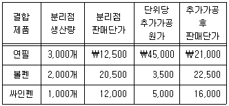
- 볼펜
- 연필
- 볼펜과 싸인펜
- 싸인펜
- 연필과 볼펜
(정답률: 알수없음)
118. (주)한국은 동일한 생산설비를 이용하여 3가지 제품 A, B, C를 생산 판매하고 있으며, 각 제품의 판매 및 원가자료는 다음과 같다. 
제품 A, B, C의 매출구성(판매량)이 4 : 2 : 1로 일정하고 총고정원가가 ￦500,000일 때 손익분기점 판매액은?
- ￦1,625,000
- ￦1,875,000
- ￦2,500,000
- ￦3,⑤0,000
- ￦4,500,000
(정답률: 알수없음)
119. 예산 편성에 관한 설명으로 옳지 않은 것은?
- 종합예산은 기업의 판매, 생산, 구매, 재무 등의 모든 측면들을 요약해서 전체 계획으로 표현한 것이다.
- 종합예산은 영업예산과 재무예산으로 구성된다.
- 종합예산에서 판매예산의 편성은 예산계획의 출발점이며, 예산의 중요한 기초를 이룬다.
- 예산편성 시 종업원의 참가 여부에 따라 권위적 예산편성, 참가적 예산편성으로 나눌 수있다.
- 자본예산은 고정자산 취득과 관련되는 설비의 확장 투자 등에 대한 예산으로 예산손익계산서에 총괄된다.
(정답률: 알수없음)
120. (주)한국의 당기 제품판매수량 750개, 제품의 단위당 판매가격 ￦50, 단위당 변동제조원가 ￦25, 단위당 변동판매비와 관리비 ￦10이며, 당기 총고정제조간접원가는 ￦900,000이다. 전부원가계산상의 영업이익이 변동원가계산상의 영업이익보다 ￦750,000 많다면, 당기의 제품생산수량은? (단, 기초재공품 및 제품과 기말재공품은 없다)
- 3,000개
- 3,250개
- 3,750개
- 4,000개
- 4,500개
(정답률: 알수없음)
해설: 중소기업기본법에서는 중소기업의 생산성 향상, 제품의 판로 확대, 국제화 촉진, 근로환경 개선과 복지수준 향상, 그리고 기술개발과 경영혁신을 통한 경쟁력 확보 및 투명한 경영을 중소기업시책으로 명시하고 있습니다. 따라서, 정답은 "중소기업의 근로환경 개선과 복지수준 향상"입니다.
기술개발과 경영혁신을 통한 경쟁력 확보 및 투명한 경영은 중소기업의 경쟁력을 높이기 위한 중요한 요소입니다. 기술개발을 통해 제품의 품질을 개선하고 생산성을 높일 수 있으며, 경영혁신을 통해 비용을 절감하고 효율적인 경영을 할 수 있습니다. 또한, 투명한 경영을 통해 신뢰를 쌓고 고객과의 신뢰도를 높일 수 있습니다. 이는 중소기업의 성장과 발전에 매우 중요한 역할을 합니다.